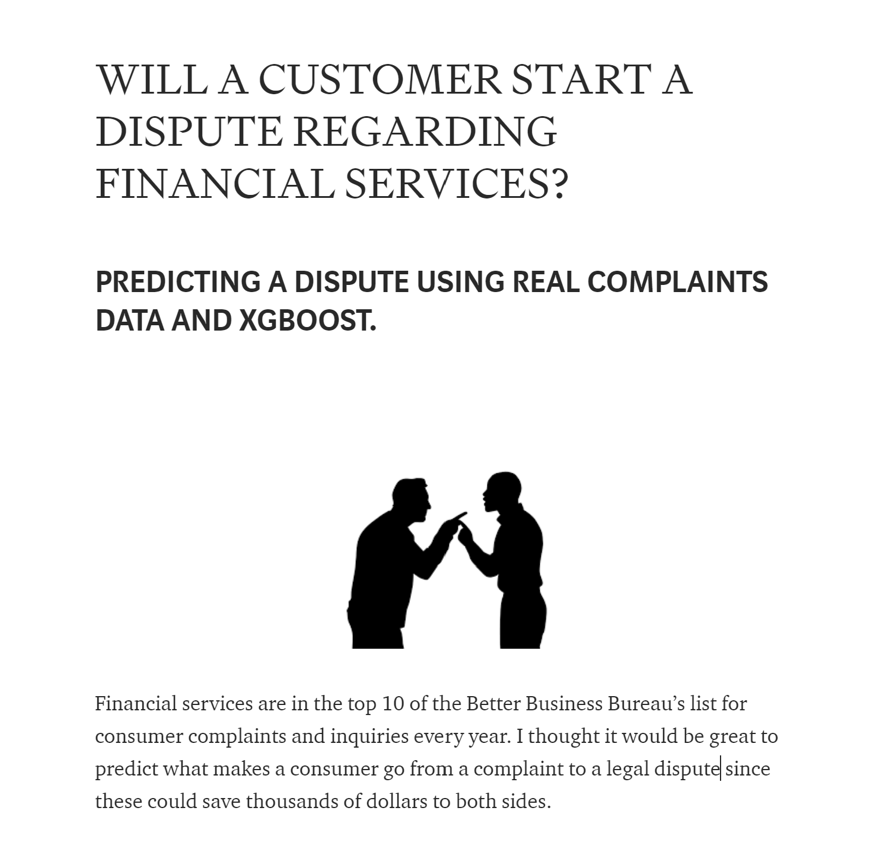
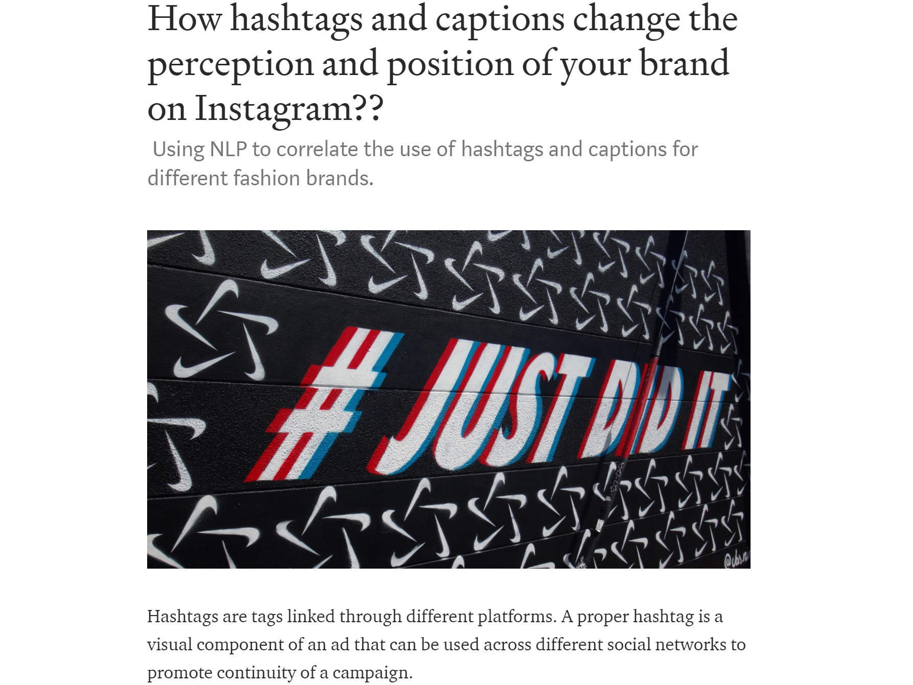
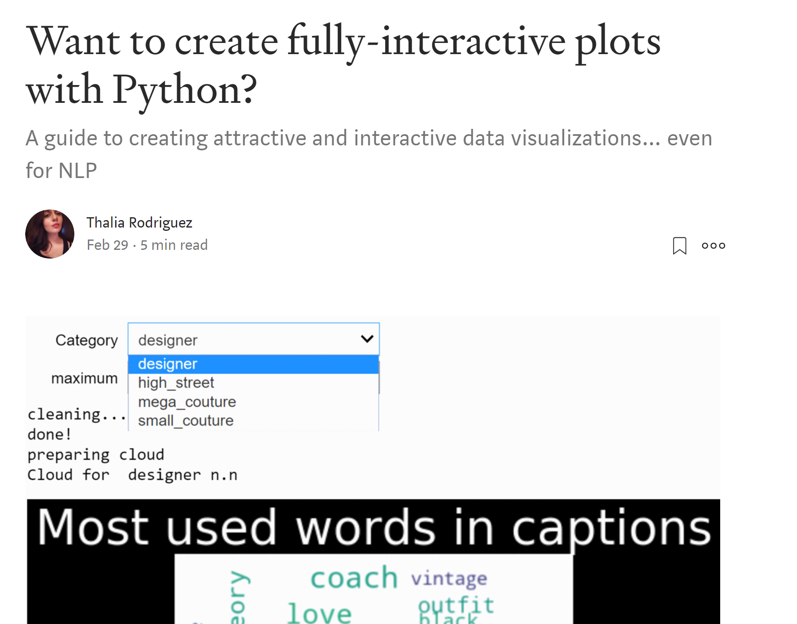
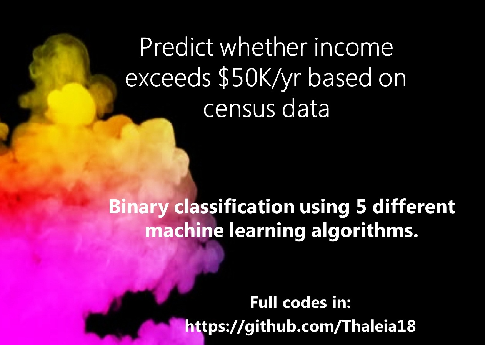

Thalia Rodriguez
Experience
Research Fellow in Mathematical Modelling, Model Data Fusion/Machine Learning
UK Dementia Research Institute• Utilized data visualization and statistical techniques to identify problems in data collection, which improved in 5% clinical data, and 30% environmental data collected.
• Analyzed longitudinal datasets covering 40,000 days within home environments, behavioral and clinical data. Developed a pipeline that includes data cleaning, generation of sleep metrics, statistical methods (linear mixed-effects models and ANOVA and data visualization to understand the relationship between seasonality, environmental factors, and sleep disruptions among individuals with dementia.
• Developed a model data fusion approach using the ensemble Kalman filter (EnKF) that utilized real-time data to retrieve parameters from a mathematical mechanistic model. These parameters are key for understanding sleep timing and duration in each person. This method provided parameters in synthetic data with an accuracy of 90%.
Data Scientist
Freelance• Demonstrated strong communication skills as the first tech consultant for a real estate company. My efforts empowered my client to make data-driven decisions.
• Developed and maintained a website for my client. The website included automated scripts to collect data, resulting in a 90% reduction in manual data entry efforts.
• Conducted A/B testing that increased the conversion rate of a form submission on the website from 2% to 10%.
Physics Lecturer
Indiana University Purdue University Columbus• Demonstrated effective communication skills in teaching complex Physics concepts to first year students. My classes had an average of 40 students and 100% attendance.
• Received positive feedback from students and faculty, with an 80% response rate and score of 89% averages in my course evaluations, highlighting my ability to adapt teaching strategies to diverse learning styles.
• Guided students, cultivating their critical thinking and problem-solving abilities. Students who took my courses increased their grades by one letter (~10%) not only in consecutive physics classes but also in mathematics and statistics.
Research Associate
Laboratory of Computational Biophysics at TCU• Applied Python to assess mathematical models for studying viral infections.
• Utilized statistical techniques, including MCMC and bootstrapping, to analyze experimental data, extracting insights while reducing the costs of research.
• Implemented linear regression and parameter estimation for Ordinary Differential Equations (ODEs), to model and predict viral infection dynamics.
Teaching Assistant
Texas Christian University• Instructed and supervised laboratory sessions for Astronomy, Classical Mechanics and Electrodynamics for freshman students with non-science majors.
Computer skills:
| Python |
|
|
Analytics: |
|
| Data Storage & Control: |
|
Web Development: |
|
Other skills:
| Logical thinking: | Communication: | Business: |
|---|---|---|
| I love puzzles and problem solving. I believe logic and critical thinking is more important than memorization. | In college, I was invited to work as radio host for a musical show. But instead, I asked to have a section in a science oriented show. A couple of times people recognized my voice in the street. | I took MBA courses during my Ph.D.
I learned about Business Operations, Marketing, Supply Chain, and Finance. I also met awesome people. |
Case competitions
Analytics
IOWA Tippie Business Analytics Competition 2018• Conducted an in-depth analysis of United Airlines customer surveys big data using R and Python. Identified through machine learning that the key
factors to improve customer experience.
• Delivered visualizations of my findings using Tableau and recommendations to a panel of industry experts.
Consulting
TCU Neeley School of Business IBM Case Competition 2017Detected areas of opportunity to take advantage of the emergence of AI and presented recommendations to accelerate market share growth.
Integrative Project Simulation
TCU Neeley School of Business• Planned and managed a marketing strategy based on data available on the simulation.
• Counseled my team members in the areas of R&D, supply chain and finance.
Education
Texas Christian University and Neeley School of BusinessPh.D. in Physics with Business Option |
2013 - 2018 GPA: 3.6 |
Texas Christian UniversityM.S. Physics |
2013 - 2016 GPA: 3.9 |
Universidad Autonoma de ZacatecasB.S. in Physics |
2008 - 2013 GPA: 3.1 |
Certifications
| Structuring Machine Learning Projects by deeplearning.ai | February 2020 |
| Machine Learning by Stanford University on Coursera | January 2020 |
| Level 1 Intelligence Analyst on Udemy | April 2019 |
Machine Learning
I am interested in use python and other tools to develop products that generate a value.
In the past years I have focused in healthcare.
But I'm curious about other topics, for example in the business school my favorite classes were Marketing and Finance, so I enjoy reading about it and tried to include some personal projects about it here.

|
SmartGram App: Models\ App | |
|  |  |
 Code here |
|
Code |
 Code |
 Code |
|
 Code |
Interests and Voluntary Work
Apart from coding, I enjoy physical challenges. If I have free time, I like to go to the gym to practice boxing (I do it since highschool). In the weekends, I practice yoga at home.
I enjoy sci-fi movies. And in Netflix, I mostly watch crime and mistery shows.
I can't decide if I'm a cat or dog person, I adore both.
I love to talk and learn about science. I spend a lot of time reading about tech.
• Collaborating in the AI challenge: “Analyzing the role of connectivity on economic and human development”. This challenge is hosted by UNDP and the goal is to build an AI-based solution for identifying the relationship between connectivity and human development indicators (life expectancy, education, and/or per capita income)..
I work closely with a mentee, we use statistics and mathematical models to develop biophysics simulations using Python.
Spring 2020
Developed a program for the enrichment classes at Alice Carlson Elementary School (Fort Worth, TX).
Taught Magnetism through an interactive course to 3rd grade students.
Spring 2016
Created science content for the radio show “A Ciencia cierta." Participated as a host in the live show.
January 2011 - May 2012
Memberships
| WWWCode | 2019 - Present |
| Tech Ladies | 2018 - Present |
| Society for Industrial and Applied Mathematics | 2013 - 2017 |
| American Physics Society | 2013 - 2017 |
Research Publications
| A comparison of methods for extracting influenza viral titer characteristics. | In this article, our aim is to compare the estimates of different viral titer characteristics using three different approaches. The first approach is the traditional method that uses estimates based on experimentally measured data. The second approach relies on the use of a linear model to fit the viral titer data. The third approach uses an exponential model for the fitting process and the parameters of interest are extracted from there. |
| Investigating different mechanisms of action in combination therapy for influenza | Here, we use a mathematical model of influenza to model combination treatment with antivirals having different mechanisms of action to measure peak viral load, infection duration, and synergy of different drug combinations. |